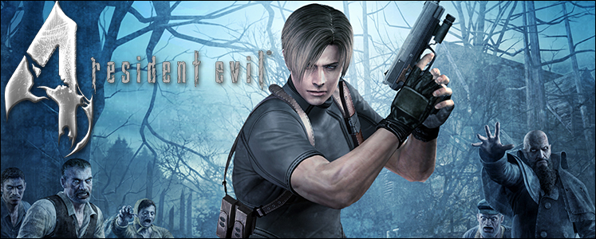
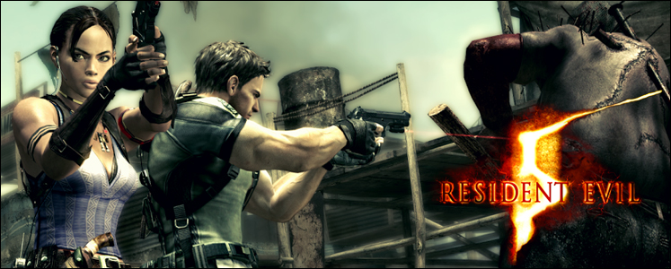
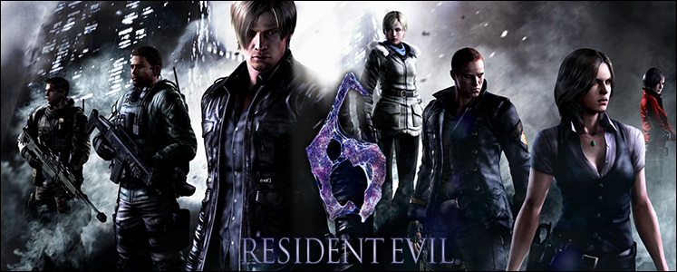
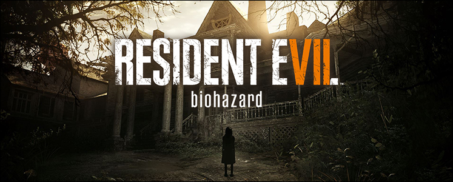

Resident Evil 4
Resident Evil 4 foi o game que mais passou por transformações, e isso tudo antes, durante e até mesmo depois de seu lançamento. Foi, também, o game que mais recebeu boatos e rumores, mesmo anos antes de começar a ser produzido. Pode-se dizer, então, que RE4 foi um dos games mais esperados pelos fãs da série, e isso fez com que ele colhesse frutos, mas também gerasse muita discussão entre os seus seguidores. É indiscutível o fato de que RE4 foi o game mais popular da série, mas também o mais polêmico. Sua fama se deve ao fato da inovação na jogabilidade, de uma trama mais voltada para a realidade atual do mundo e do carisma de seus personagens. Além disso, suas polêmicas também surgem de todos estes elementos inovadores. São as duas faces da moeda de um game totalmente diferenciado dos títulos anteriores.
Resident Evil 5
Depois do lançamento do esperado Resident Evil 4, a Capcom aguçou diversas vezes a curiosidade e a ansiedade dos fãs da série, informando que Resident Evil 5 estava em produção e a caminho de seus consoles. Essas informações, apesar de bombásticas, eram sempre escassas e parecia que o jogo teria o mesmo destino de seu antecessor: atrasos, mudanças e versões nunca terminadas. Em 2005, veio o primeiro trailer do game, que mostrava um herói ainda anônimo andando por ruas desertas de algum lugar ensolarado. Os gráficos eram bonitos, porém não eram ainda o que ainda estava por vir. Dois anos depois, veio o trailer definitivo do jogo, um espetáculo gráfico, música de fundo e cenas de tirar o fôlego. O herói, então, foi finalmente revelado como sendo mais uma vez Chris Redfield, o protagonista de games anteriores. A trama se passa em um local fictício da África, chamado Kijuju. É para onde Chris segue em uma nova missão. Agora, ele é membro de uma nova força militar, a BSAA, que investiga e contém incidentes bioterroristas. A princípio, ele está em Kijuju para surpreender e prender mais um possível bioterrorista que vende armas biológicas no mercado negro. Contudo, as motivações de Chris logo se tornarão outras.
Resident Evil 6
Resident Evil 6 é um divisor na franquia, mas de opiniões. Ele traz a história mais dramática de toda a série, adotando o estilo “Dramatic Horror”, enquanto sua gameplay traz uma ação desenfreada. Desenfreada até demais, diga-se de passagem. O jogo é constituído de três histórias interligadas, e cada uma tem a sua própria dupla de protagonistas. O agente especial do governo dos EUA, Leon S. Kennedy, faz dupla com a também agente Helena Harper. Os dois são considerados culpados pela morte do Presidente dos Estados Unidos, vítima de um ataque bioterrorista. Sendo assim, precisam provar sua inocência. A trama dos dois se passa na cidade de Tall Oaks, onde a maior parte da população se transformou em zumbis. Enquanto isso, em missão na cidade de Lanshiang, na China, Chris Redfield se une ao companheiro da BSAA, Piers Nivans. Os dois devem enfrentar uma nova ameaça bioterrorista, enquanto Chris enfrenta os seus demônios internos. Nivans é considerado o melhor atirador de elite da organização, e é também o braço direito de Chris, por quem tem imensa admiração. Cabe a ele, portanto, evitar que o passado traumático de seu capitão seja um obstáculo em cumprir a sua missão com responsabilidade.
Resident Evil 7
Resident Evil 7 é um título que buscou uma renovação à série. Lançado durante a celebração dos vinte anos de existência da franquia, ele é um retorno às raízes do terror e do Survival Horror. Ao mesmo tempo, ele que procura abrir um novo arco de trama e um nível mais profundo de imersão, quando opta pela perspectiva da câmera em primeira pessoa (FPS) e a compatibilidade com o PSVR. Sua história gira em torno do novo personagem Ethan Winters. Inesperadamente, ele recebe um e-mail de sua esposa, Mia, que está desaparecida há três anos. Nele, Mia pede que ele vá buscá-la em uma propriedade na cidadezinha de Dulvey, no meio de Louisiana. Porém, para o azar de Ethan, ele acaba se envolvendo em um verdadeiro pesadelo, que irá mudar sua vida para sempre. Ele precisará lidar com uma Mia completamente diferente, enquanto tenta fugir da casa e da fúria da bizarra família Baker. Além do retorno de diversos elementos do gênero Survival Horror, coisas também tradicionais nos Resident Evil clássicos estão de volta, como as salas de salvamento com baús e a gravação dos progressos. Resolução de puzzles para abrir caminhos e pegar armas também estão presentes no título, assim como inimigos estrategicamente posicionados dentro do contexto da história.